Ваше рішення · журнал «ДентАрт» 2024 №2
Техніка комбінування прямих композитних реставрацій і вінірів
The Technique of Combining Direct Composite Restorations and Veneers
Ваше рішення · What Would You Do In This Clinical Case?
Початкова клінічна ситуація
Пацієнтка Д., 25 років, звернулася в клініку з проханням покращити зовнішній вигляд верхніх і нижніх зубів.
Об'єктивно. На верхніх та нижніх зубах наявні композитні реставрації. Кілька реставрацій на верхніх зубах мають сколи.
Деякі нижні зуби без композитного матеріалу і мають сліди препарування твердих тканин. Усі реставрації, що залишилися, – неналежної якості, мають дебондинг, порушені герметизм і крайове прилягання.
Є порушення при протрузійних рухах (передній напрямній). Бічні напрямні: при латеротрузії праворуч є контакти на передніх зубах; при латеротрузії ліворуч – групове введення, контакти на передніх зубах.
На верхніх і нижніх молярах є композитні реставрації на жувальній поверхні (Класу І), що встановлені досить давно.
Варіанти відновлення цілісності структури зубів, нормалізації оклюзії та естетики:
- Композитні реставрації за допомогою шаблону (прямим методом).
- Керамічні вініри (непрямим методом).
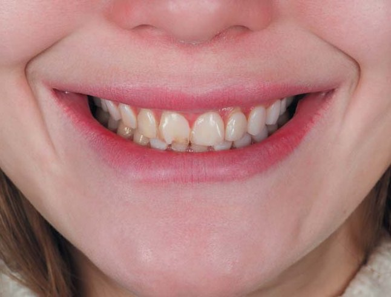
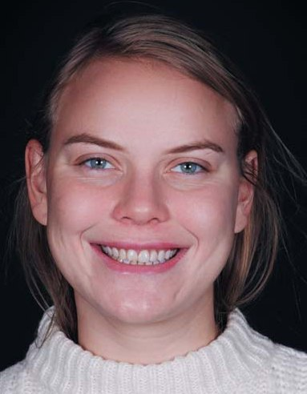
Початкова ситуація.
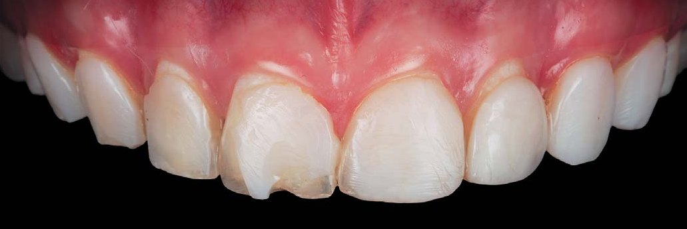
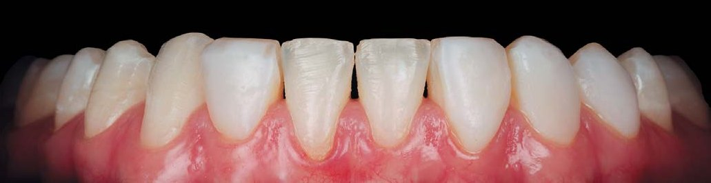
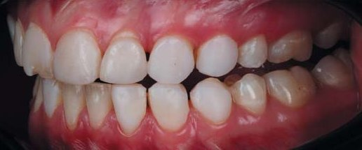
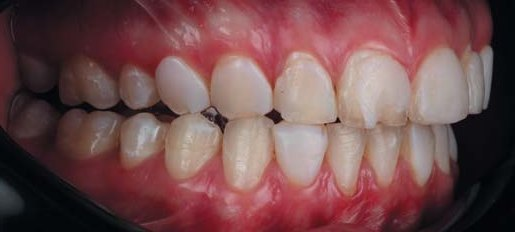
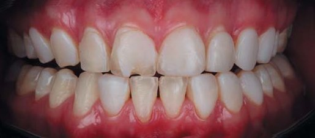
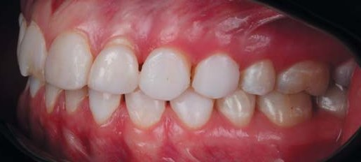
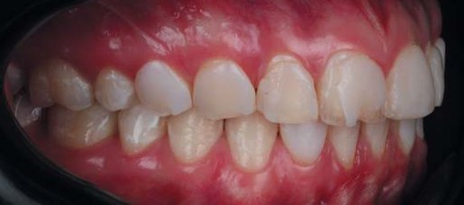
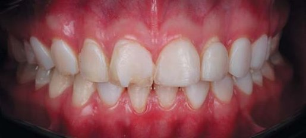
Фото зубів до лікування.
Колеги, вирішувати вам, який метод лікування більш прийнятний.
Що у цьому випадку зробив автор
При реабілітації пацієнтів, коли маємо справу зі стислими термінами та високими естетичними вимогами, надзвичайно важливо оцінювати обсяг втручання та прогнозувати довгостроковий результат. Враховуючи молодий вік пацієнтки, іноді слід використовувати техніку комбінування прямих композитних реставрацій і непрямих реставрацій – керамічних вінірів на одному зубі для максимального збереження твердих тканин. Комбінація кількох матеріалів не є поширеною методикою, але, на мою думку, має істотну перевагу.
Було проведено функціональну діагностику. Співставлення КТ черепа (у звичній оклюзії), сканування зубів та індивідуальні рухи нижньої щелепи, записані на цифровому аксіографі, дали таке розуміння:
- положення суглобових головок у суглобовому ложі оптимальне;
- рухи нижньої щелепи повторювані;
- міжальвеолярна відстань оптимальна для подальшої роботи;
- положення нижньої щелепи можна залишити колишнім.
Скарг на обмежене відкривання рота, хрускіт, клацання в суглобах немає. При пальпації жувальної мускулатури спазм, гіпертонус, болючість відсутні. Тест навантаження негативний.
Після фото- та відеоаналізу обличчя й усмішки пацієнтки було визначено: лінія усмішки середня; видимість зубів у стані спокою 3,5 мм; ширина усмішки – видимі 12–14 зубів; щічний коридор нормальний.
У цьому клінічному випадку було ухвалено рішення на молярах на жувальній поверхні замінити композитні реставрації, а естетику на вестибулярній поверхні цих зубів створювати за допомогою непрямих реставрацій – керамічних вінірів, тобто скомбінувати пряму і непряму техніку відновлення зубів.
Як альтернативне клінічне рішення, можна було повністю перекрити жувальні поверхні молярів керамічними накладками (vonlay), але в цьому випадку довелося б робити редукцію горбиків і всієї жувальної поверхні на 0,8–1,2 мм. Враховуючи молодий вік пацієнтки і невеликий об'єм композитних реставрацій, обраний нами метод буде менш інвазивним.
Наступним етапом була заміна старих композитних реставрацій на молярах. На підставі wax-up звернули увагу на потребу корекції зенітів у зоні зубів 11, 13, 14, 21.
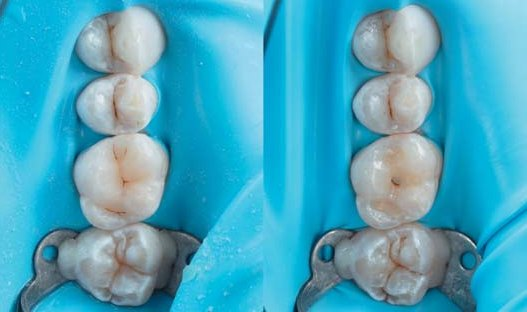
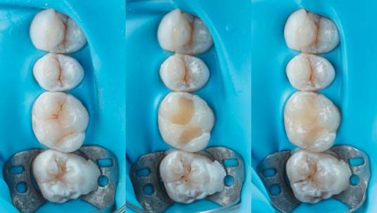
Корекція зенітів на зубах 11, 13, 14, 21 робилися в один візит. Фінішну лінію (уступ) на цих зубах сформували згідно з дизайном wax-up. Стабілізувалися м'які тканини на тимчасових реставраціях (1-го порядку), поки виготовлялися постійні конструкції.
За допомогою А-силікону віддублювали wax-up з надрукованих моделей, створивши силіконовий ключ для перенесення на верхні і нижню щелепи.
За допомогою самотвердіючої пластмаси Ivoclar Telio CS C&B та силіконового ключа на оброблені зуби верхніх і нижньої щелеп з точковим протравлюванням і точковим нанесенням адгезиву перенесли макет майбутніх зубів (mock-up), тим самим виготовивши тимчасові реставрації прямим методом (1-ого порядку). Після вилучення силіконового шаблону та корекції скальпелем 12D і полум'яподібним бором тимчасових реставрацій провели засвічування кожного зуба фотополімерною лампою по 20 с (для надійної фіксації тимчасових реставрацій).
Тільки на цьому етапі ми змогли продемонструвати пацієнтці і схвалити нову форму і довжину зубів.
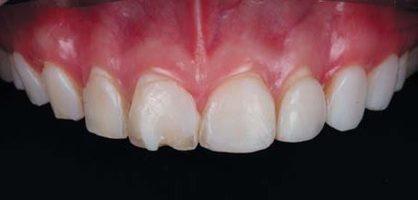
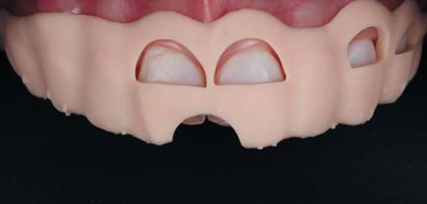
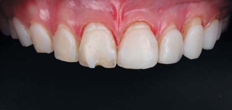
У зуботехнічній лабораторії було виготовлено шаблон для корекції м'яких тканин. Зеніти у цьому шаблоні повторювали новий дизайн майбутніх зубів. Корекцію м'яких тканин зробили за допомогою плазма-ножа.
Коректно продемонструвати перенесення воскового моделювання у ротову порожнину пацієнтки (mock-up) не було можливості через великий вестибулярний об'єм старого композиту. У цьому випадку можна було діяти кількома способами: 1) виготовлення wax-up у двох варіантах – спочатку з виступаючим вестибулярно старим композитом, потім з коректним (фінальним) вестибулярним об'ємом, з попереднім пришліфовуванням; 2) виготовлення wax-up відразу з коректним (фінальним) вестибулярним об'ємом, без уваги на зайвий об'єм старого композиту.
Ми обрали другий спосіб, попередньо обговоривши це з пацієнткою і отримавши її схвалення.
Підготовка зубів (препарування) під контролем операційного мікроскопа дозволила максимально бережливо поставитися до тканин, точно диференціювати старий композит і тверді тканини зуба. Препарування під інфільтраційною анестезією зводилося до видалення старого композиту, полірування і створення чіткої фінішної лінії (уступу). Препарування провадилося алмазними борами Komet (868314012, 8868314012, 868314016, 8868314016).
Під час препарування зубів на верхніх щелепах для комфортнішої роботи операційне поле було ізольоване в техніці split-dam.
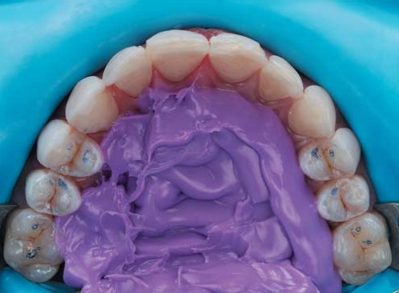
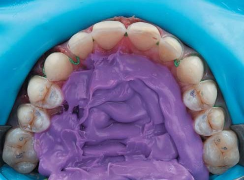
Пацієнтка обрала колір постійних реставрацій BL3, тому препарування проводилося з ретракційною ниткою 000 (Sure Cord) у зубоясенній борозні. Це дозволило отримати вертикальну ретракцію, апікальне зміщення м'яких тканин.
Зуби були відпрепаровані в межах емалі у вигляді вікончатого вініра з редукцією ріжучого краю. Перед зняттям цифрового відбитка (скануванням) встановили другу нитку із просоченням Sure-Cord 0 (експозиція 5 хвилин). Вона забезпечила горизонтальну ретракцію і легкий доступ до країв препарування під час фінального сканування.
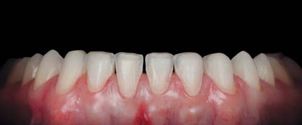
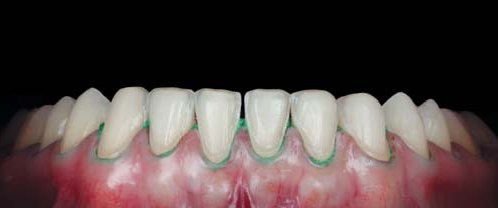
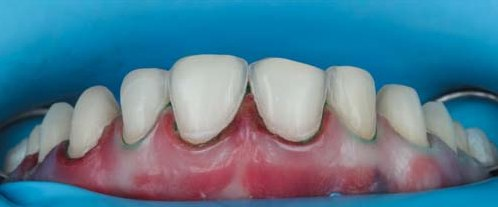
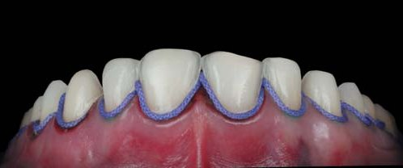
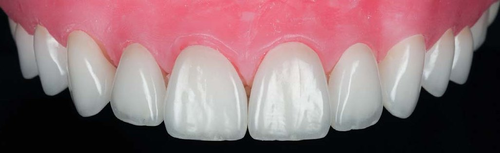
Наступний візит пацієнтки в клініку – це примірка і фіксація керамічних вінірів. Зняття тимчасових реставрацій і полірування зубів насадками Enhance від залишків адгезиву. Під час примірки в реставрації внесено Try-In paste Ivoclar відтінку warm – для імітації відтінку постійного фіксуючого матеріалу.
Переконавшись у тому, що реставрації мають гарне крайове прилягання, а також задовольняють естетичний запит пацієнтки, можна розпочинати адгезивну фіксацію. Ми здійснили ізоляцію за допомогою системи рабердам для контролю сухості операційного поля.
Адгезивна підготовка кераміки
Очищення керамічних реставрацій було зроблене повітряно-абразивно порошком оксиду алюмінію 27 мкм (Kavo Rondoflex). Це ефективний метод очищення поверхні після внутрішньоротової примірки. Динамічне протравлювання вінірів на рефракторі плавиковою кислотою 4,5 % протягом 60 с. Експозиція етилового спирту 96 % на поверхні кераміки 30 с для очищення від залишків плавикової кислоти.
Силанізація поверхні кераміки за допомогою Monobond Plus (Ivoclar) для створення внутрішнього зв'язку між керамікою і фіксуючим матеріалом. На силанізовану поверхню кераміки було внесено адгезив системи ClearFil SE Bond 2 (Kuraray), експозиція 20 с, надлишки адгезиву були прибрані повітрям. Внесення фіксуючого композиту Variolink Esthetic LC відтінку Warm. Щоб уникнути затвердіння композитного цементу, керамічні реставрації помістили у помаранчевий світлозахисний бокс.
Після ізоляції зубів було проведено повітряно-абразивну підготовку зубів порошком оксиду алюмінію 27 мкм (Kavo Rondoflex). Мета цього етапу – очищення і створення мікрошорсткості поверхні для збільшення площі адгезії.
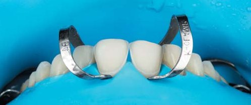
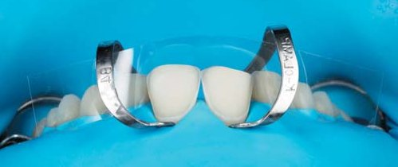
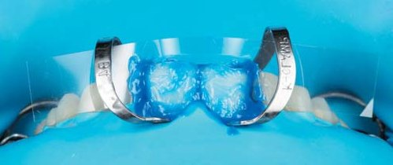
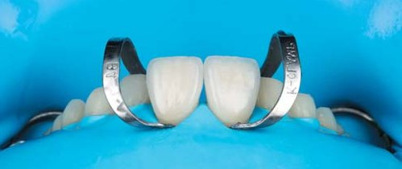
Для коректного позиціонування фіксацію вінірів завжди починають з двох центральних різців. Щоб запобігти потраплянню травильного гелю та адгезивної системи на сусідні зуби, центральні різці ізолюємо лавсановою матрицею.
Динамічне протравлювання емалі зубів протягом 30 с. Адгезивна підготовка зубів здійснювалася системою ClearFil SE Bond 2 (Kuraray). Була зроблена точкова полімеризація вінірів на зубах протягом 3 с, далі надлишки фіксуючого матеріалу прибрали пензликом. Контроль надлишків цементу в апроксимальних контактах за допомогою флоса. Залишки фіксуючого цементу обережно зрізаються скальпелем 12D.
Під час остаточної полімеризації важливим моментом є встановлення режиму Soft-start на полімеризаційній лампі. Для уникнення профарбовування межі зуб – кераміка слід прибрати шар, інгібований киснем, за допомогою Air-Block. Остаточне полірування композитного шва робилося повітряно-абразивною методикою за допомогою насадки Perio Kit та гліцину Prophyflex Perio Powder (Kavo).
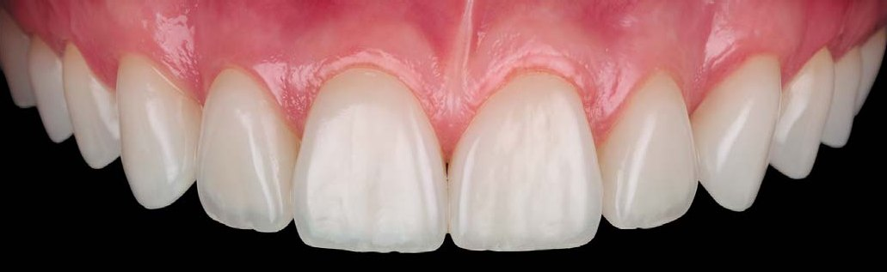
Результат
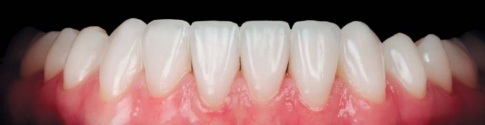
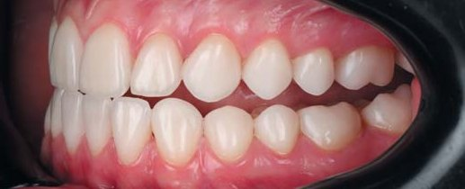
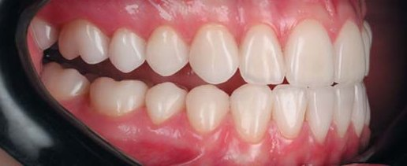
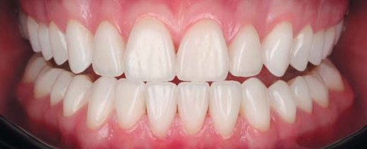
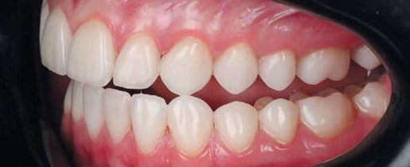
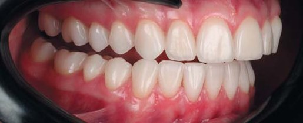
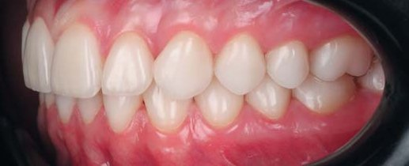
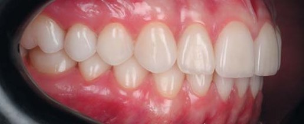
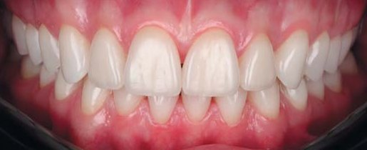
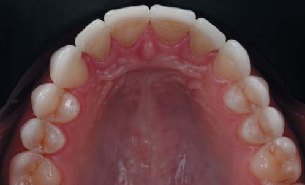
Висновки
Нам вдалося скомбінувати композитні та керамічні реставрації в одній функціонально-естетичній реабілітації і таким чином максимально зберегти природні тверді тканини зубів.
Подібні реставрації функціонують як одне ціле у ротовій порожнині пацієнта і мають стабільний довгостроковий прогноз експлуатації.
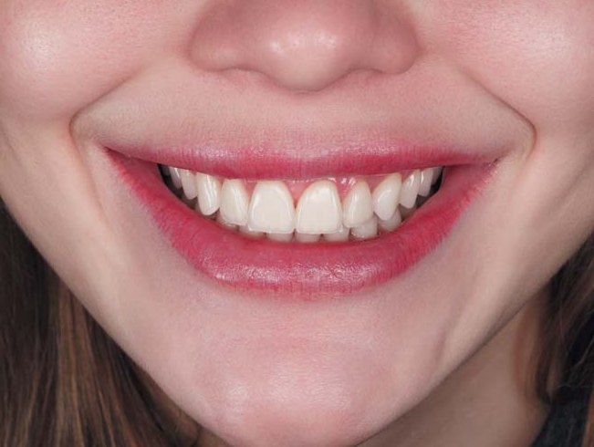
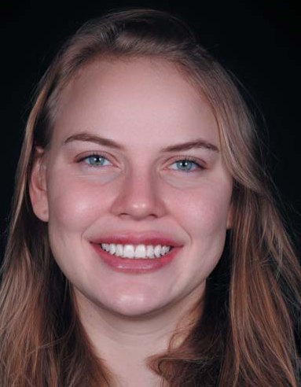
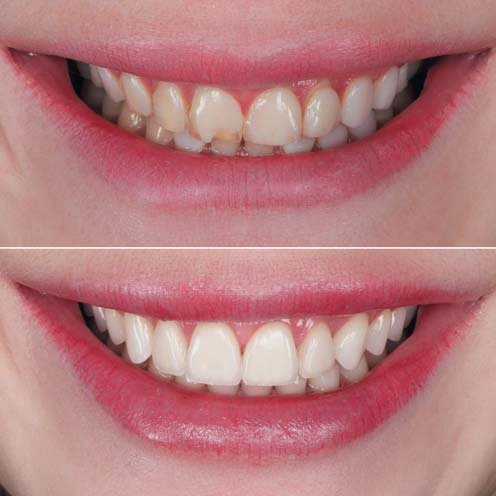
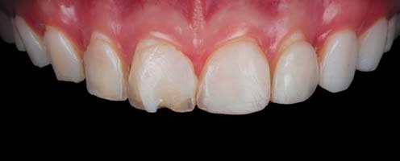
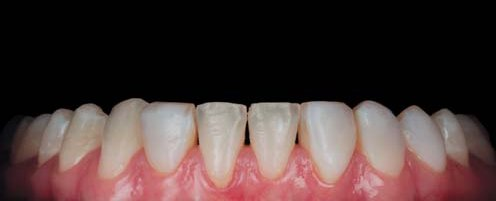